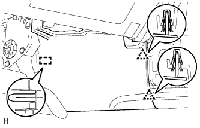
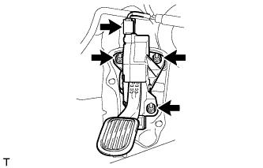
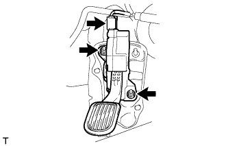

ПЕДАЛЬ АКСЕЛЕРАТОРА > СНЯТИЕ |
| 1. СНИМИТЕ НИЖНЮЮ КРЫШКУ ПАНЕЛИ ПРИБОРОВ № 1 В СБОРЕ (для моделей с левосторонним рулевым управлением) |
 |
Выверните винт и снимите нижнюю крышку панели приборов № 1.
Освободите 2 фиксатора и 2 направляющих и снимите нижнюю крышку панели приборов № 1.
| 2. СНИМИТЕ ПЕРЕДНЮЮ ВСТАВКУ ВЕЩЕВОГО ЯЩИКА В ОБЛИЦОВКЕ ТУННЕЛЯ ПОЛА № 1 (для моделей с левосторонним рулевым управлением) |
|  |
Освободите 2 фиксатора и направляющую и снимите переднюю вставку вещевого ящика в облицовке туннеля пола № 1.
| 3. СНИМИТЕ ДАТЧИК ПОЛОЖЕНИЯ ПЕДАЛИ АКСЕЛЕРАТОРА В СБОРЕ (для моделей с автоматической трансмиссией) |
|  |
Отсоедините разъем педали акселератора.
Отверните 3 гайки и снимите педаль акселератора.
| 4. СНИМИТЕ ДАТЧИК ПОЛОЖЕНИЯ ПЕДАЛИ АКСЕЛЕРАТОРА В СБОРЕ (для моделей с механической трансмиссией) |
|  |
Отсоедините разъем педали акселератора.
Отверните 2 гайки и снимите педаль акселератора.